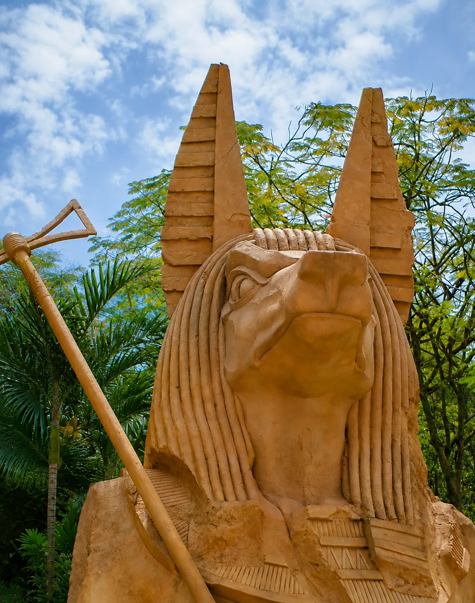

Terra Mítica
Parque temático dividido en zonas ambientadas en el Egipto, Grecia, Roma e Iberia antiguos, con atracciones para distintas edades y espectáculos en directo durante el día. Combina emoción moderada con un hilo narrativo histórico pensado para que los niños disfruten sin darse cuenta de que están aprendiendo. Un clásico de Benidorm para pasar el día completo en familia.
Partida del Moralet, s/n, 03502 Benidorm (Alicante) Visitar web oficial